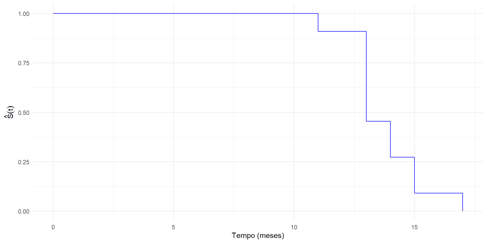
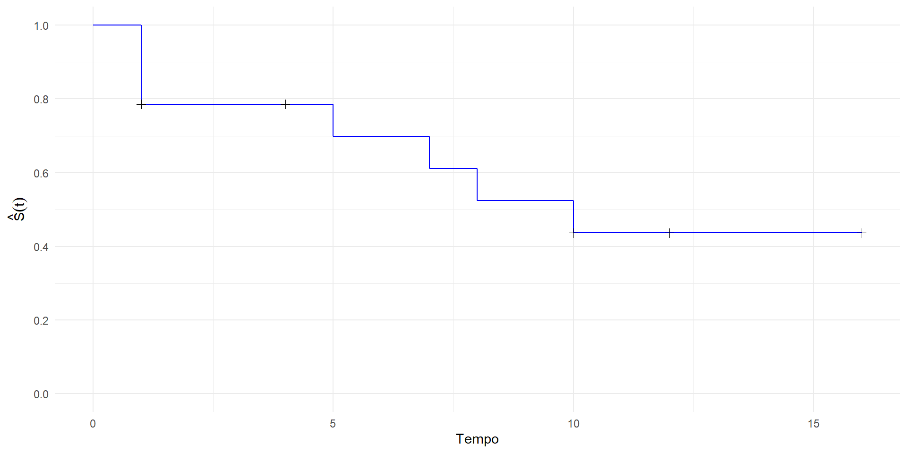
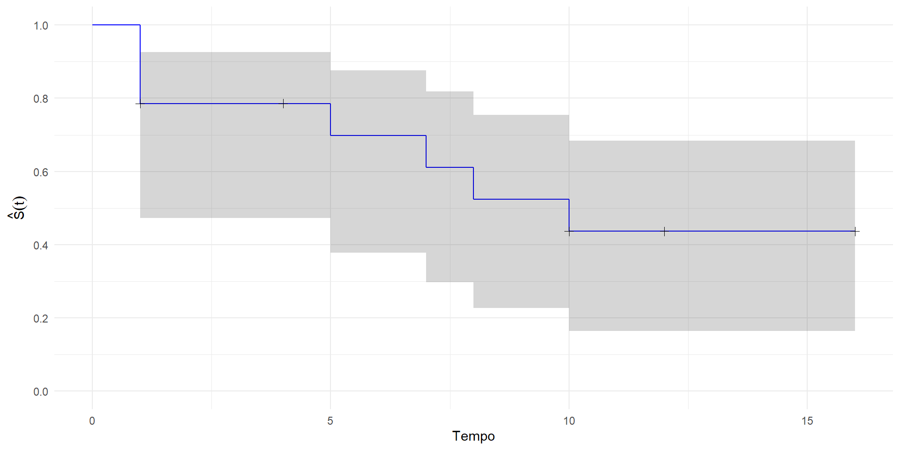

ESTIMAÇÃO NÃO PARAMÉTRICA
Universidade Federal Fluminense
| Função | Definição | Interpretação |
|---|---|---|
| Densidade | \(f(t)\) | Probabilidade de falha em torno de \(t\) |
| Distribuição | \(F(t) = P(T \le t)\) | Probabilidade de o evento ocorrer até \(t\) |
| Sobrevivência | \(S(t) = P(T > t)\) | Probabilidade de sobreviver além de \(t\) |
| Risco (hazard) | \(h(t) = \dfrac{f(t)}{S(t)}\) | Taxa instantânea de falha em \(t\) |
| Risco acumulado | \(H(t) = \int_0^t h(u)\,du\) | Acúmulo de risco até \(t\) |
| Tempo médio | \(E(T)\) | Vida média (quando existe) |
| Tempo médio residual | \(E(T - t \mid T > t)\) | Vida esperada após \(t\) |
Osteossarcoma é um tumor ósseo maligno comum em adolescentes e jovens adultos.
Uma complicação frequente é a metástase pulmonar, quando as células do tumor se espalham para os pulmões, representando risco de vida.
Burdette & Gehan (1970) consideram os dados de um estudo descritivo com 11 pacientes do sexo masculino com osteossarcoma e metástase pulmonar
Os pacientes foram acompanhados desde o diagnóstico da metástase pulmonar até a morte (evento de interesse) de todos os pacientes.
Os tempos de sobrevivência observados (em meses) são:
11, 13, 13, 13, 13, 13, 14, 14, 15, 15 e 17
| Grupos | Tempos de Sobrevivência |
|---|---|
| Controle | 1+, 2+, 3, 3, 3+, 5+, 5+, 16+, 16+, 16+, 16+, 16+, 16+, 16+, 16+ |
| Esteroide | 1, 1, 1, 1+, 4+, 5, 7, 8, 10, 10+, 12+, 16+, 16+, 16+ |
+ indica censura\[ S(t) = P(T > t) \]
\[ \hat{S}(t) = \frac{\text{nº de elementos que não apresentaram o evento de interesse até o tempo } t} {\text{nº de elementos no estudo}} \]
Por exemplo,
\[ \begin{aligned} \hat{S}(14) &= \frac{\text{nº de elementos que não morreram até 11 meses }} {\text{nº de elementos no estudo}} \\ &= \frac{10}{11} = 0{,}909 \end{aligned} \]
| \(j\) | \(t_j\) | \(\textrm{Intervalo}_j\) | \(\hat{S}(t_j)\) |
|---|---|---|---|
| 1 | 0 | \([0,\;11)\) | 1.000 |
| 2 | 11 | \([11,\;13)\) | 0.909 |
| 3 | 13 | \([13,\;14)\) | 0.455 |
| 4 | 14 | \([14,\;15)\) | 0.273 |
| 5 | 15 | \([15,\;17)\) | 0.091 |
| 6 | 17 | \([17,\;\infty)\) | 0.000 |

No tópico anterior, foi estimada a função de sobrevivência (confiabilidade) para um estudo em que todas as observações apresentaram o evento de interesse, ou seja, não existiram censuras.
Na prática, entretanto, o conjunto de dados amostrais de tempos de ocorrência do evento de interesse apresenta censuras, o que requer técnicas estatísticas especializadas para acomodar a informação contida nestas observações.
A observação censurada informa que o tempo até a ocorrência do evento de interesse é maior do que aquele que foi registrado (censura à direita).
\[ \hat{S}(t)=\frac{\text{nº de elementos que não apresentaram o evento de interesse até } t} {\text{nº de elementos no estudo}} \]
| Grupos | Tempos de Sobrevivência |
|---|---|
| Controle | 1+, 2+, 3, 3, 3+, 5+, 5+, 16+, 16+, 16+, 16+, 16+, 16+, 16+, 16+ |
| Esteroide | 1, 1, 1, 1+, 4+, 5, 7, 8, 10, 10+, 12+, 16+, 16+, 16+ |
| \(j\) | \(t_j\) | \(\textrm{Intervalo}_j\) |
|---|---|---|
| 1 | 0 | [0,1) |
| 2 | 1 | [1,5) |
| 3 | 5 | [5,7) |
| 4 | 7 | [7,8) |
| 5 | 8 | [8,10) |
| 6 | 10 | [10,16) |
| \(j\) | \(t_j\) | \(\textrm{Intervalo}_j\) | \(d_j\) |
|---|---|---|---|
| 1 | 0 | [0,1) | 0 |
| 2 | 1 | [1,5) | 3 |
| 3 | 5 | [5,7) | 1 |
| 4 | 7 | [7,8) | 1 |
| 5 | 8 | [8,10) | 1 |
| 6 | 10 | [10,16) | 1 |
Agora considere o \(n_j\), o número de elementos sob risco no tempo \(t_j\), isto é, quantos elementos não apresentaram o evento de interesse e não foram censurados até o instante imediatamente anterior a \(t_j\).
Assim, para os dados de hepatite, tem-se os seguintes valores para \(n_j\):
| \(j\) | \(t_j\) | \(\textrm{Intervalo}_j\) | \(d_j\) | \(n_j\) |
|---|---|---|---|---|
| 1 | 0 | [0,1) | 0 | 14 |
| 2 | 1 | [1,5) | 3 | 14 |
| 3 | 5 | [5,7) | 1 | 9 |
| 4 | 7 | [7,8) | 1 | 8 |
| 5 | 8 | [8,10) | 1 | 7 |
| 6 | 10 | [10,16) | 1 | 6 |
\[ P(X>5) = P(X>1, X>5) = P(X>5 \mid X>1) \cdot P(X>1) \]
Na prática, isso funciona da seguinte forma (para j=1,2,3):
(continuação)
(continuação)
Encontre o valor de \(\hat{S(8)}\) e:
Após todos os passos, tem-se a seguinte tabela com todas as funções de sobrevivência estimadas:
| j | \(t_j\) | \(\textrm{Intervalo}_j\) | \(d_j\) | \(n_j\) | \(\hat{S}_{KM}(t_j)\) |
|---|---|---|---|---|---|
| 1 | 0 | [0,1) | 0 | 14 | 1,000 |
| 2 | 1 | [1,5) | 3 | 14 | 0,786 |
| 3 | 5 | [5,7) | 1 | 9 | 0,698 |
| 4 | 7 | [7,8) | 1 | 8 | 0,611 |
| 5 | 8 | [8,10) | 1 | 7 | 0,524 |
| 6 | 10 | [10,16) | 1 | 6 | 0,437 |

O estimador de Kaplan-Meier é o mais utilizado na prática. Porém, existem outras alternativas:
[ ((t)) = ^2 _{j:t_j t} ]
\[ IC_{100(1-\alpha)\%}^{plain}(S(t))\approx\hat{S}(t) \pm z_{\alpha/2} \sqrt{\text{Var}\left(\hat{S}(t)\right)} \]
| j | \(t_j\) | \(\textrm{Intervalo}_j\) | \(d_j\) | \(n_j\) | \(\hat{S}(t_j)\) | LI \(IC_{95\%}^{plain}(S(t_j))\) | LS \(IC_{95\%}^{plain}(S(t_j))\) |
|---|---|---|---|---|---|---|---|
| 1 | 0 | [0,1) | 0 | 14 | 1,000 | 1,000 | |
| 2 | 1 | [1,5) | 3 | 14 | 0,786 | 0,571 | 1,001 |
| 3 | 5 | [5,7) | 1 | 9 | 0,698 | 0,448 | 0,948 |
| 4 | 7 | [7,8) | 1 | 8 | 0,611 | 0,340 | 0,882 |
| 5 | 8 | [8,10) | 1 | 7 | 0,524 | 0,243 | 0,805 |
| 6 | 10 | [10,16) | 1 | 6 | 0,437 | 0,155 | 0,718 |
\[ IC_{100(1-\alpha)\%}^{\log}(S(t)) = \left[ \hat{S}(t)\exp\!\left(-z_{\alpha/2}\frac{\sqrt{\text{Var}(\hat{S}(t))}}{\hat{S}(t)}\right), \; \hat{S}(t)\exp\!\left(z_{\alpha/2}\frac{\sqrt{\text{Var}(\hat{S}(t))}}{\hat{S}(t)}\right) \right] \] - Esse intervalo é obtido aplicando o método delta à transformação logarítmica.
Por que usar a transformação log?
O intervalo clássico para (S(t)) é construído diretamente na escala original, o que pode gerar
limites negativos ou maiores que 1.
Ao aplicar a transformação [ !(S(t)), ] obtém-se um estimador que, para (t) fixo, possui distribuição Normal assintótica.
O intervalo é então construído nessa nova escala e transformado de volta para a escala de (S(t)).
Principais vantagens em relação ao intervalo sem transformação: - garante limites sempre positivos; - introduz assimetria mais compatível com a função de sobrevivência; - apresenta maior estabilidade ao longo do tempo; - melhora a qualidade da inferência assintótica.
⚠️ Apesar dessas melhorias, o intervalo com transformação log ainda apresenta limitações, especialmente quando (S(t)) está próximo de 1, o que motiva o uso de transformações ainda mais adequadas.
| j | \(t_j\) | \(\textrm{Intervalo}_j\) | \(d_j\) | \(n_j\) | \(\hat{S}(t_j)\) | LI \(IC_{95\%}^{plain}(S(t_j))\) | LS \(IC_{95\%}^{plain}(S(t_j))\) |
|---|---|---|---|---|---|---|---|
| 1 | 0 | [0,1) | 0 | 14 | 1,000 | 1,000 | |
| 2 | 1 | [1,5) | 3 | 14 | 0,786 | 0,571 | 1,001 |
| 3 | 5 | [5,7) | 1 | 9 | 0,698 | 0,448 | 0,948 |
| 4 | 7 | [7,8) | 1 | 8 | 0,611 | 0,340 | 0,882 |
| 5 | 8 | [8,10) | 1 | 7 | 0,524 | 0,243 | 0,805 |
| 6 | 10 | [10,16) | 1 | 6 | 0,437 | 0,155 | 0,718 |
Para garantir que os limites do intervalo pertençam a \([0,1]\), aplica-se a transformação log–log: \[ g\!\big(S(t)\big) = \log\!\big(-\log S(t)\big) \]
Como \(\log\!\big(-\log \hat{S}(t)\big)\), para \(t\) fixo, tem distribuição Normal assintoticamente, o intervalo aproximado de \(100(1-\alpha)\%\) de confiança para \(S(t)\) é dado por:
\[ IC_{100(1-\alpha)\%}^{\log\text{–}\log}(S(t)) = \left[ \exp\!\Big(-\exp\!\big( \log(-\log \hat{S}(t)) + z_{\alpha/2}\,SE \big)\Big), \; \exp\!\Big(-\exp\!\big( \log(-\log \hat{S}(t)) - z_{\alpha/2}\,SE \big)\Big) \right] \] onde \[ SE = \sqrt{ \text{Var}\!\left(\log\!\big(-\log \hat{S}(t)\big)\right) }. \]
A figura abaixo apresenta os intervalos de confiança construídos segundo a transformação log-log:
